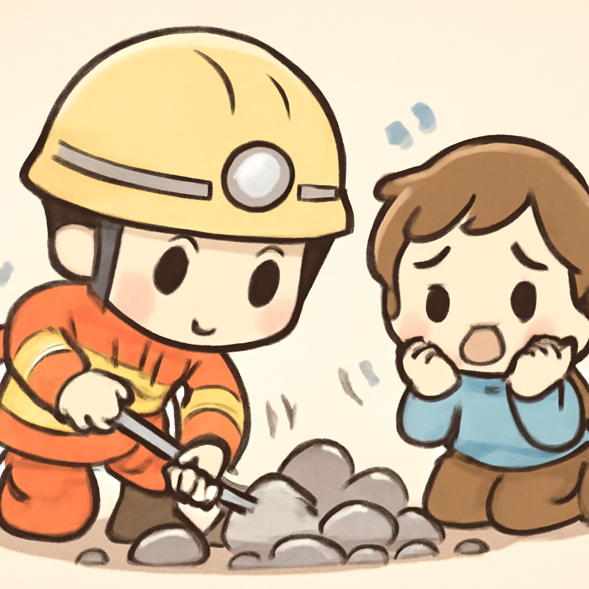
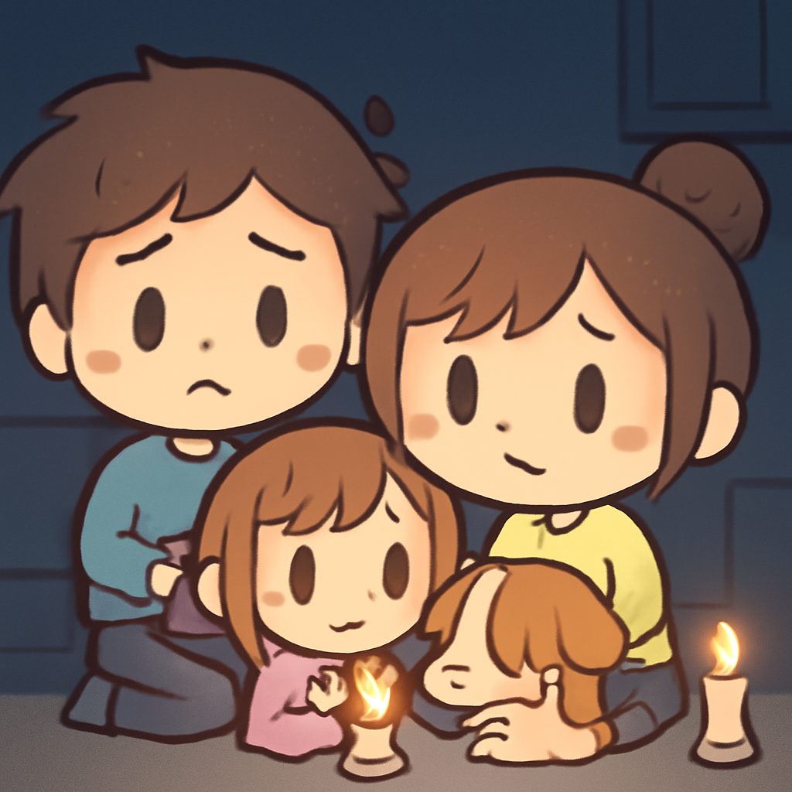

其一 · 烏克蘭基輔 · 澤倫斯基對前國防部長言論回應
澤倫斯基回應前閣員呼籲戰時選舉
在烏克蘭基輔，總統澤倫斯基強調戰爭期間舉行選舉會對國家造成嚴重破壞，反駁了前國防部長的呼籲。他指出，當前的優先事項是團結抵抗敵人，而不是選舉。這一言論再次彰顯了烏克蘭在面對戰爭時的政治穩定與團結重要性。希望選舉能等到烏克蘭重新回到和平的日子。
🔗 原始新聞 ↗
2026-08-24 · 以古觀今，以笑抗愁
澤倫斯基回應前閣員呼籲戰時選舉
在烏克蘭基輔，總統澤倫斯基強調戰爭期間舉行選舉會對國家造成嚴重破壞，反駁了前國防部長的呼籲。他指出，當前的優先事項是團結抵抗敵人，而不是選舉。這一言論再次彰顯了烏克蘭在面對戰爭時的政治穩定與團結重要性。希望選舉能等到烏克蘭重新回到和平的日子。
🔗 原始新聞 ↗
加拿大宣布對美國商品徵收報復性關稅
在加拿大渥太華，總理表示，因與美國的貿易談判失敗，加拿大將對部分美國商品徵收報復性關稅。這一決定讓兩國的貿易關係更加緊張，甚至有可能引發貿易戰。看來，全球貿易就像一場精彩的摔角比賽，誰都不想放手。
🔗 原始新聞 ↗
乍得首都垃圾填埋場崩塌，造成多人死傷

在乍得首都恩贊，一座大型垃圾填埋場崩塌，埋住了幾十棟房屋，造成至少30人死亡，數十人受傷。這場悲劇凸顯了城市基礎設施的脆弱，更讓人反思垃圾處理的重要性。希望未來能有更好的解決方案，而不是等待下一次意外發生。
🔗 原始新聞 ↗
法國因熱浪導致溺水事故激增，301人喪生
在法國，隨著夏季熱浪來襲，溺水事故數量顯著上升，政府報告指出自6月19日以來已有301人溺水身亡。相關部門呼籲民眾注意安全，尤其是在高溫天氣中。看來，這個夏天不僅是游泳的好時機，還是要學會更自保的時刻。
🔗 原始新聞 ↗
印第安納州居民已經沒有電力維持生活12天

在美國印第安納州的蓋瑞市，居民們在一場大停電中熬過了12天的生活，許多人表示已經進入了生存模式。該市有三分之一的居民生活在貧困中，這場停電無疑加重了他們的困境。希望他們能早日重新點亮生活的燈火。
🔗 原始新聞 ↗